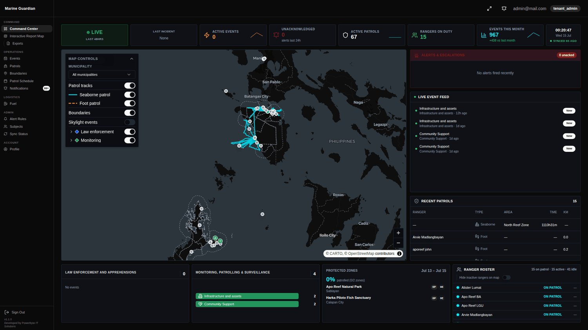
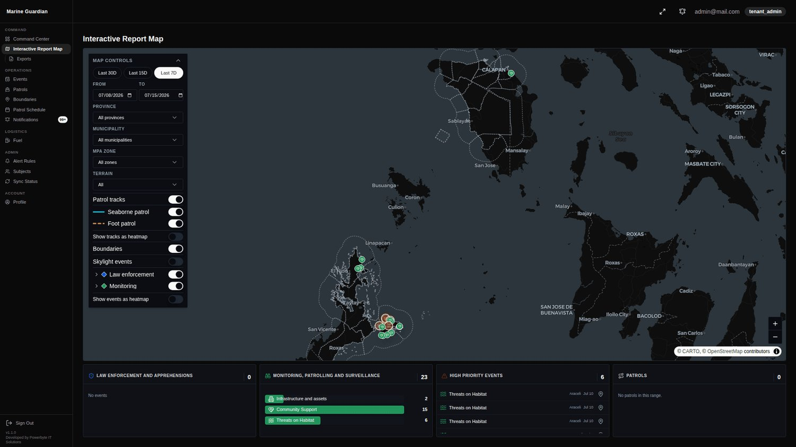
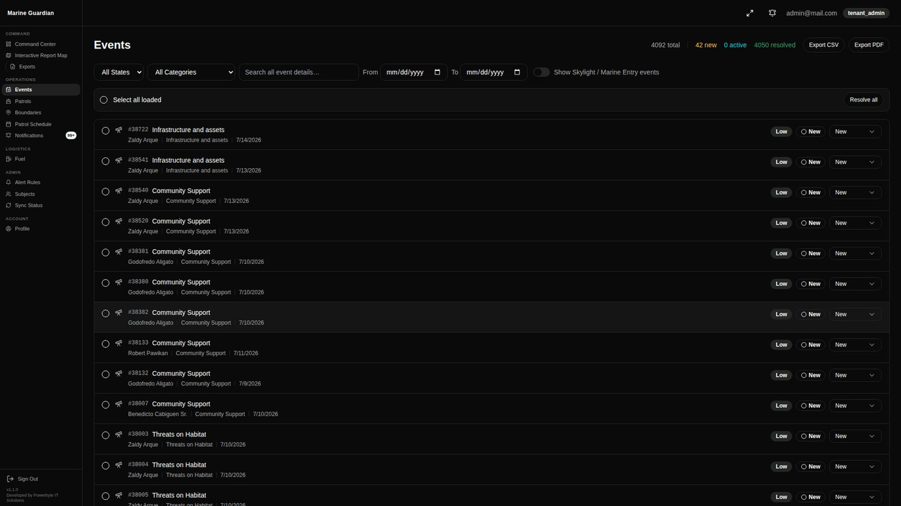
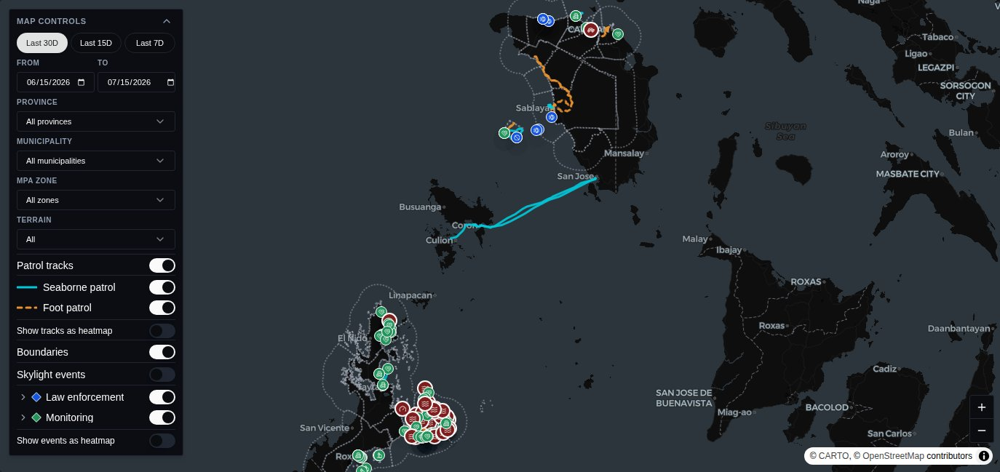
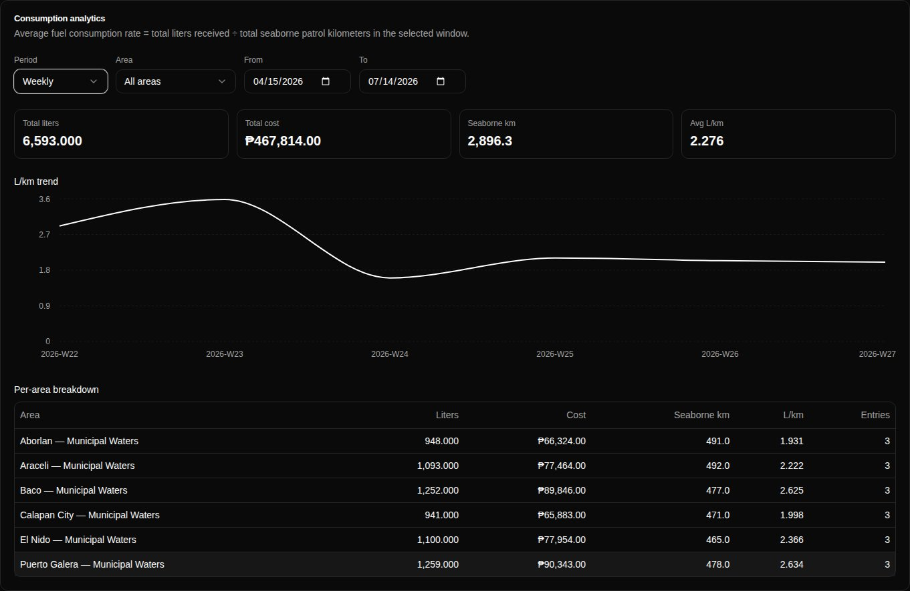
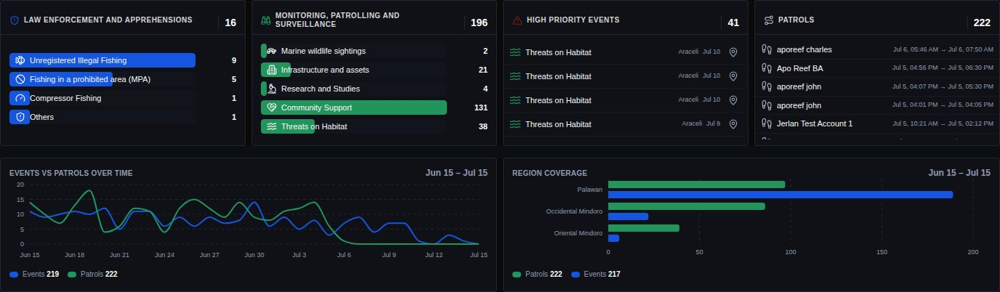
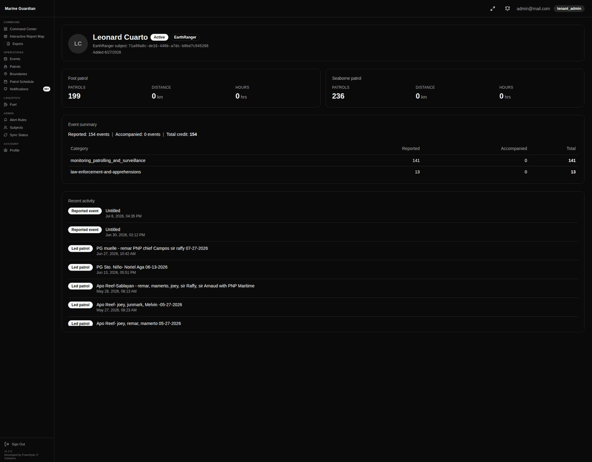
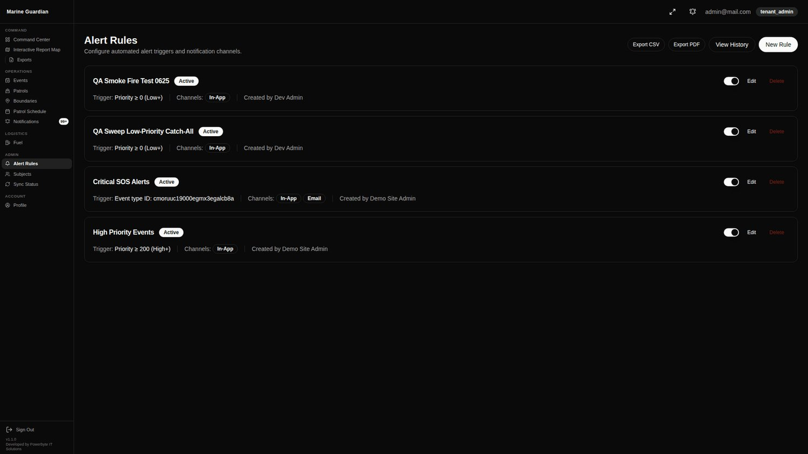
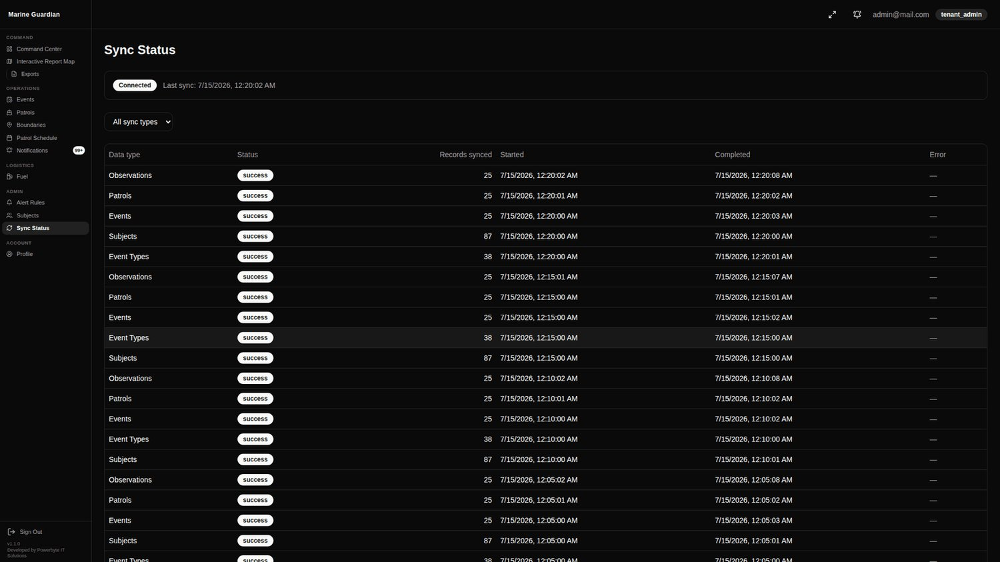
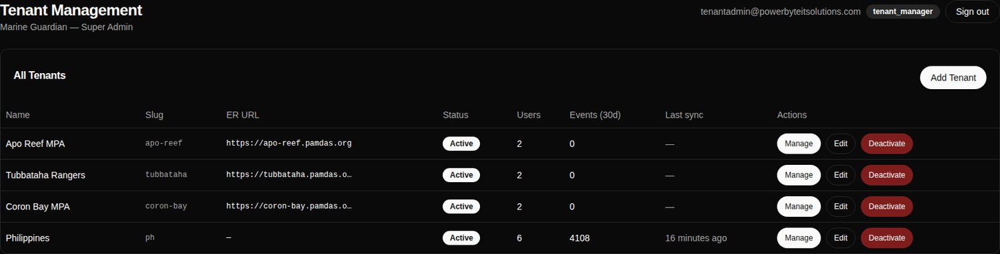

Marine
Guardian
Real-time operations intelligence for marine protected areas —
the command center EarthRanger never had.
EarthRanger collects the field data.
Nothing turns it into decisions.
EarthRanger is an excellent field-collection platform — but it has no reporting, no charts, no cross-area analytics within a site, and no configurable alerting. MPA managers rebuild the same monthly report by hand, every month.
One command center, on top of EarthRanger.
Marine Guardian syncs every tenant's EarthRanger data and turns it into live monitoring, automated analytics, patrol planning, and alerting — without changing how rangers work in the field.
Live monitoring
A 24/7 War Room with live map, KPIs, event feed and alerts — built for a wall display.
Automated analytics
Per-area, consolidated and ranger-performance reports — generated, not hand-built.
Configurable alerting
Per-tenant rules with in-app + email escalation and war-room acknowledgement.
Patrol planning
Draw coverage zones, schedule rangers on a Gantt, and compare planned vs actual.
Field data in. Command intelligence out.
A scheduled, incremental sync mirrors each tenant's EarthRanger into Marine Guardian — where local edits, planning and reporting live alongside the source of truth.
EarthRanger API
Per-tenant REST + SocketIO. Events, subjects, patrols, observations, event types.
Delta ingest
Incremental updated_since watermark. Configurable interval, retry with backoff, per-run sync log.
Command DB
PostgreSQL, tenant-isolated. Immutable ER snapshot + local edits protected by revision-presence.
Live ops & reports
War Room, maps, event ops, patrol planning, fuel, alerts and exports — all in real time.
↳ Local edits survive upstream ER changes · state updates pushed back to EarthRanger via API
The daily operational loop.
Seven role-based flows condense into one repeatable cycle — from live watch to the monthly report, all inside a single command center.
Monitor
Operators watch the War Room — live map, KPIs, event feed.
Escalate
Acknowledge alerts, update state, escalate critical incidents.
Investigate
Fill in missing details, review patrol tracks & linked events.
Plan
Draw coverage zones, schedule rangers on the Gantt timeline.
Report
Generate per-area, consolidated & ranger reports; export.
Command Center War Room
A 24/7 wall-display command center — map-dominant, dark-locked, streaming live with no interaction required.

Interactive Report Map
A full-canvas MapLibre GL analysis surface where every layer, filter and marker is interactive.

Event Management
A continuous, newest-first operations list where operators triage and complete every incident.

Patrol Operations & Planning
Monitor active patrols, plan coverage zones, and schedule rangers — foot and seaborne, end to end.

Fuel Logging & Consumption
Track bulk fuel allocations per area and turn them into a real consumption rate against seaborne patrol distance.

Reports & Exports
The manual monthly PDF, automated — per area, across areas, and down to the individual event.

Ranger Performance
Credit every ranger fairly — reporters and everyone who accompanied them — across every activity type.

Alerts & Notifications
Configurable, per-tenant rules that surface the events that matter — and prove they were seen.

EarthRanger Sync & Settings
Each site connects its own EarthRanger server — secured, testable, and fully in the admin's control.

Multi-site & Multilingual
One platform, many marine protected areas — each isolated, branded and onboarded on its own terms.
tenant_id with the L1–L6 security stack/mindoro, /banggai, /pecca
Four roles, scoped by responsibility.
| Role | Can do | Cannot do |
|---|---|---|
| Super AdminPLATFORM | Create & manage tenants, assign Site Admins, view platform health, access any tenant for support. | Operate inside a tenant as a regular user without being added; modify ER configuration. |
| Site AdminTENANT OWNER | Configure EarthRanger connection, manage users & alert rules, all reports, report templates, all Operator & Coordinator actions. | Create/manage other tenants; access other tenants' data; change platform settings. |
| Field CoordinatorPLANNING | Plan patrol areas, schedule rangers (Gantt), monitor patrols, review & edit events, view and export reports. | Manage users; configure ER connection or alert rules; access tenant settings. |
| Command OperatorOPERATIONS | Monitor War Room & map, update event states, acknowledge & escalate alerts, fill event details, log fuel, view dashboards. | Plan patrol areas; schedule rangers; manage users; configure settings/alerts; export reports. |
Enterprise security, privacy by design.
L3 · L5 · L6
RBAC, audit logging and Prisma query guardrails active on every request — no opt-out.
L1 + L2 + L4
Every record scoped by tenant_id; no cross-tenant read path. ER tokens encrypted at rest.
RA 10173 / NPC
15-day DSR response · six data-subject rights · request-and-review erasure honouring legal hold.
Tiered & accessible
Audit/security logs 5y, operational data 3y. WCAG 2.2 AA on compliance & auth surfaces.
A modern, production-grade stack.
Type-safe end to end, containerized for a single-VPS or multi-server future, and dark-locked by design for the ops room.
Real-time operations intelligence
for marine protected areas.
From EarthRanger field data to a live command center, automated reports, and defensible records — one platform per site.